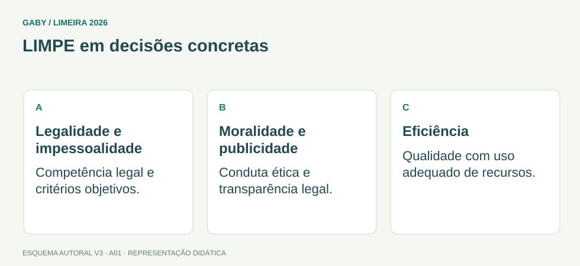

Objetivos do módulo
- Compreender os cinco princípios expressamente previstos no edital.
- Distinguir aplicação de cada princípio em situações práticas.
- Reconhecer pegadinhas que confundem legalidade, moralidade, publicidade e eficiência.
- Localizar no art. 37 da Constituição os incisos e parágrafos cobrados (concurso, cargos em comissão, remuneração, licitação, publicidade oficial, responsabilidade) e dizer o que cada um determina.
- Relacionar os incisos do art. 5º e os arts. 70 e 74 da Constituição ao controle da Administração.
- Reconhecer os princípios e critérios do art. 2º da Lei 9.784/1999 e distinguir anulação, revogação e convalidação.
- Identificar os princípios implícitos e os princípios das licitações (Lei 14.133/2021) e do serviço adequado (Lei 8.987/1995).
LIMPE em decisões concretas

Descrição em texto do esquema
- Legalidade e impessoalidade: Competência legal e critérios objetivos.
- Moralidade e publicidade: Conduta ética e transparência legal.
- Eficiência: Qualidade com uso adequado de recursos.
Oficina visual · aplique o esquema
Um servidor atende primeiro um conhecido, sem prioridade legal. Qual princípio é especialmente comprometido?
Atividade autoral complementar da V3. Registre sua resposta; a resolução está no arquivo de gabarito e revisão.
Mapa do conteúdo
- 1. Visão geral — LIMPE
- 2. Legalidade
- 3. Impessoalidade
- 4. Moralidade
- 5. Publicidade e eficiência
- 6. Art. 37 da Constituição: incisos e parágrafos cobrados
- 7. Garantias do art. 5º que limitam a Administração
- 8. Prestação de contas e controle: arts. 70 e 74 da Constituição
- 9. Lei 9.784/1999: princípios e critérios do processo administrativo
- 10. Autotutela: anulação, revogação e convalidação
- 11. Princípios implícitos e reconhecidos em lei
- 12. Princípios nas licitações e no serviço público adequado
1. Visão geral — LIMPE
O edital cobra os princípios da legalidade, impessoalidade, moralidade, publicidade e eficiência. Eles orientam a atuação administrativa e precisam ser entendidos de forma prática, não apenas decorados pela sigla.
Em questões, o enunciado costuma apresentar uma conduta e pedir qual princípio foi respeitado ou violado. A solução depende do elemento central da situação.
Quem deve obedecer: o alcance do art. 37
- Direta e indireta: a administração direta são os órgãos do próprio ente (na Prefeitura, o gabinete e as secretarias). A indireta são as entidades com personalidade jurídica própria: autarquias, fundações, empresas públicas e sociedades de economia mista. Ter personalidade jurídica própria não tira a entidade do alcance do art. 37.
- Qualquer dos Poderes: Executivo, Legislativo e Judiciário, quando administram (contratam, nomeiam, compram).
- Todos os entes: União, Estados, Distrito Federal e Municípios. Uma autarquia municipal de água e esgoto obedece aos mesmos cinco princípios que um ministério.
A eficiência entrou no caput com a Emenda Constitucional 19/1998; os outros quatro constam do texto desde 1988.
Princípios expressos e implícitos
Os cinco do caput são os princípios expressos na Constituição para a Administração. Há outros, igualmente cobrados, que decorrem do sistema ou estão escritos em leis: supremacia e indisponibilidade do interesse público, finalidade, motivação, razoabilidade, proporcionalidade, segurança jurídica, autotutela, continuidade (seção 11). Se a questão pede princípio do art. 37 e uma alternativa traz termo que não está no caput nem é princípio reconhecido (por exemplo, “unicidade”), esse é o item estranho.
Os princípios valem em conjunto
Nenhum princípio afasta outro. O gestor que dispensa um requisito legal para atender mais gente não está sendo eficiente: está violando a legalidade. O resultado só é legítimo quando alcançado por meio lícito, impessoal, ético e transparente.
2. Legalidade
Na Administração Pública, o agente atua dentro das competências e autorizações previstas pelo ordenamento. A ideia não é simplesmente “fazer o que a lei não proíbe”, como se costuma dizer do particular; a atuação administrativa deve encontrar fundamento jurídico e respeitar limites.
Para o particular, a Constituição diz que ninguém será obrigado a fazer ou deixar de fazer alguma coisa senão em virtude de lei (art. 5º, II). Para a Administração, a lógica se inverte: só pode agir quando a lei autoriza.
A Lei 9.784/1999 formula a legalidade como “atuação conforme a lei e o Direito” (art. 2º, parágrafo único, I). O agente obedece à lei, à Constituição e aos princípios, e não apenas ao texto de uma ordem interna. Ordem de chefia, costume antigo do setor ou rotina não autorizam contrariar a lei.
Aplicações da legalidade no próprio art. 37: remuneração de servidor só por lei específica (X); casos de contratação temporária definidos em lei (IX); autarquia criada por lei específica (XIX). Ver seção 6.
3. Impessoalidade
Impessoalidade exige finalidade pública, tratamento sem favorecimentos pessoais e atuação atribuída ao órgão, não à promoção individual do agente. A publicidade institucional não deve ser instrumento de autopromoção.
A impessoalidade tem três faces cobradas em prova:
- Finalidade pública: o ato existe para atender o interesse geral, não um parceiro, parente ou adversário do agente. Ato formalmente perfeito, mas praticado para favorecer um particular, viola a impessoalidade.
- Igualdade de tratamento: critérios objetivos para todos. Concurso público (art. 37, II) e licitação com igualdade de condições (art. 37, XXI) são aplicações diretas.
- Vedação de promoção pessoal: o que a Administração faz é atribuído ao órgão, não à pessoa do agente. É a regra do art. 37, § 1º, da Constituição.
Leia o § 1º em duas partes. A primeira diz para que serve a publicidade oficial: educar, informar ou orientar. A segunda proíbe nomes, símbolos ou imagens de promoção pessoal. A proibição não tem exceção: o caráter educativo da campanha ou a boa avaliação da obra não autorizam o retrato ou o slogan do gestor.
A Lei 9.784/1999 repete a ideia: “objetividade no atendimento do interesse público, vedada a promoção pessoal de agentes ou autoridades” (art. 2º, parágrafo único, III).
4. Moralidade
Moralidade administrativa envolve padrões de honestidade, lealdade, boa-fé e probidade compatíveis com a função pública. Uma conduta pode parecer formalmente possível, mas ainda ser questionável se desvia de padrões éticos e de finalidade pública.
A moralidade administrativa é jurídica, não é a opinião moral de cada um. Ofendem a moralidade:
- a violação intencional do direito, por ação ou por omissão;
- o desvio de poder (ou desvio de finalidade): usar a competência para um fim diferente daquele para o qual ela foi dada, como remover um servidor para puni-lo;
- a intenção viciada no uso da competência discricionária: a lei dá margem de escolha e o agente a usa para favorecer ou perseguir;
- a deslealdade, a má-fé e a manipulação de informações, ainda que os papéis estejam em ordem.
Palavras que apontam para moralidade no enunciado: ética, honestidade, boa-fé, lealdade, probidade, decoro, intenção viciada, desvio de poder. A Lei 9.784/1999 exige “atuação segundo padrões éticos de probidade, decoro e boa-fé” (art. 2º, parágrafo único, IV).
A Constituição protege a moralidade com instrumentos próprios: qualquer cidadão pode propor ação popular para anular ato lesivo à moralidade administrativa (art. 5º, LXXIII), e os atos de improbidade administrativa importam suspensão dos direitos políticos, perda da função pública, indisponibilidade dos bens e ressarcimento ao erário, na forma da lei (art. 37, § 4º).
5. Publicidade e eficiência
Publicidade favorece transparência e conhecimento dos atos, ressalvadas hipóteses legítimas de sigilo. Eficiência busca resultados, qualidade, economicidade e boa utilização dos recursos. Eficiência não autoriza violar a legalidade: rapidez não legitima atalho ilegal.
Publicidade: regra, fundamento e exceções
Publicidade é dar conhecimento dos atos para que possam produzir efeitos e ser controlados. A regra é a transparência; o sigilo é exceção e precisa de previsão no ordenamento. A Administração não pode afastar a publicidade por simples conveniência.
- Art. 5º, XIV: é assegurado a todos o acesso à informação, resguardado o sigilo da fonte, quando necessário ao exercício profissional.
- Art. 5º, XXXIII: todos têm direito a receber dos órgãos públicos informações de seu interesse particular, ou de interesse coletivo ou geral, ressalvadas aquelas cujo sigilo seja imprescindível à segurança da sociedade e do Estado.
- Art. 37, § 1º: a publicidade oficial é educativa, informativa ou de orientação social e não pode promover pessoalmente autoridades ou servidores (seção 3).
- Art. 37, § 16: as políticas públicas devem ser avaliadas, com divulgação do objeto avaliado e dos resultados alcançados.
Publicidade (princípio) não é propaganda. Divulgar o ato é dever; exaltar o gestor é vedado.
Eficiência
Incluída no caput do art. 37 pela Emenda Constitucional 19/1998. Exige que o serviço seja prestado com qualidade, rendimento e bom uso dos recursos: menos retrabalho, menos desperdício, prazos razoáveis. Liga-se à razoável duração do processo (art. 5º, LXXVIII) e à avaliação das políticas públicas (art. 37, § 16). Não é só “gastar menos” nem “atender mais”: é obter o melhor resultado possível dentro da lei.
| Princípio | Pergunta útil |
|---|---|
| Legalidade | há fundamento e competência? |
| Impessoalidade | há favorecimento/promoção pessoal? |
| Moralidade | a conduta é ética e leal ao interesse público? |
| Publicidade | há transparência, salvo sigilo legítimo? |
| Eficiência | recursos e processos geram resultado com qualidade? |
6. Art. 37 da Constituição: incisos e parágrafos cobrados
Depois do caput, o art. 37 traz regras concretas. Cada uma aplica um ou mais princípios: o concurso aplica a impessoalidade; a lei específica para remuneração aplica a legalidade; a licitação aplica a igualdade entre os concorrentes. A banca costuma cobrar a letra do inciso trocando uma palavra.
Concurso público e ingresso
| Dispositivo | O que determina | Como cai |
|---|---|---|
| Art. 37, II | A investidura em cargo ou emprego público depende de aprovação prévia em concurso público de provas ou de provas e títulos. Exceção escrita no próprio inciso: nomeação para cargo em comissão declarado em lei de livre nomeação e exoneração. | Cargo efetivo preenchido por escolha da chefia, entrevista ou indicação: inconstitucional. A regra vale para União, Estados, Distrito Federal e Municípios. |
| Art. 37, III | O prazo de validade do concurso é de até dois anos, prorrogável uma vez, por igual período. | Trocam “até dois anos” por prazo fixo, ou admitem prorrogações sucessivas. Só existe uma prorrogação, e ela não é obrigatória. |
| Art. 37, IV | Durante o prazo improrrogável previsto no edital de convocação, o aprovado em concurso é convocado com prioridade sobre novos concursados para assumir cargo ou emprego na carreira. | Invertem a ordem, dando preferência aos aprovados no concurso mais recente. A prioridade é de quem foi aprovado no concurso anterior ainda válido. |
| Art. 37, § 2º | Descumprir os incisos II e III implica a nulidade do ato e a punição da autoridade responsável, nos termos da lei. | Publicar a nomeação não corrige a falta de concurso. O ato é nulo e a autoridade responde. |
Função de confiança e cargo em comissão (art. 37, V)
As duas figuras servem apenas para atribuições de direção, chefia e assessoramento. O que muda é quem pode ocupá-las.
| Figura | Quem ocupa | Observação |
|---|---|---|
| Funções de confiança | Exclusivamente servidores ocupantes de cargo efetivo. | Quem não tem cargo efetivo não pode exercer função de confiança. |
| Cargos em comissão | Livre nomeação e exoneração; a lei fixa casos, condições e percentuais mínimos reservados a servidores de carreira. | Podem ser ocupados por pessoa sem vínculo efetivo, mas só para direção, chefia e assessoramento. |
Tarefa operacional ou rotineira não pode ser entregue a cargo em comissão. O nome dado ao cargo não muda a natureza das atribuições: se a atividade não é de direção, chefia ou assessoramento, a regra é o concurso do inciso II.
Direitos do servidor, pessoal e remuneração
| Dispositivo | O que determina | Como cai |
|---|---|---|
| Art. 37, VI | Garante ao servidor público civil o direito à livre associação sindical. | Afirmam que o servidor civil não pode se sindicalizar. A proibição de sindicalização e de greve é do militar (art. 142, § 3º, IV). Livre associação também significa que ninguém é obrigado a se filiar. |
| Art. 37, VIII | A lei reservará percentual dos cargos e empregos públicos para pessoas com deficiência e definirá os critérios de admissão. (O texto constitucional usa a expressão antiga “pessoas portadoras de deficiência”.) | Dizem que a reserva fere a igualdade ou que depende de sorteio. A reserva está na Constituição e é definida em lei. |
| Art. 37, IX | A lei estabelecerá os casos de contratação por tempo determinado para atender a necessidade temporária de excepcional interesse público. | Trocam “lei” por decreto, edital ou resolução. Quem define os casos é a lei de cada ente. |
| Art. 37, X | A remuneração dos servidores e o subsídio só podem ser fixados ou alterados por lei específica, observada a iniciativa privativa em cada caso. O inciso também assegura revisão geral anual, na mesma data e sem distinção de índices. | Aumento por portaria, ordem interna ou acordo individual: inválido. Exige lei específica, proposta por quem tem a iniciativa. |
Entidades da administração indireta e licitação
| Dispositivo | O que determina | Como cai |
|---|---|---|
| Art. 37, XIX | Somente por lei específica pode ser criada autarquia e autorizada a instituição de empresa pública, de sociedade de economia mista e de fundação. No caso da fundação, lei complementar define as áreas de atuação. | Confundem “criar” com “autorizar”. A lei específica cria a autarquia diretamente; para as demais, a lei apenas autoriza a instituição. Decreto não cria autarquia. |
| Art. 37, XX | Depende de autorização legislativa, em cada caso, a criação de subsidiárias dessas entidades e a participação de qualquer delas em empresa privada. | Dizem que basta decisão do conselho da empresa ou decreto. O texto exige autorização do Poder Legislativo. |
| Art. 37, XXI | Ressalvados os casos especificados na legislação, obras, serviços, compras e alienações são contratados por licitação pública que assegure igualdade de condições a todos os concorrentes. Só se admitem exigências de qualificação técnica e econômica indispensáveis à garantia do cumprimento das obrigações. | Exigência sem relação com o objeto, que só uma empresa atende, restringe a disputa e viola o inciso. Urgência por conveniência interna não afasta a igualdade. |
Parágrafos do art. 37
| Dispositivo | O que determina | Como cai |
|---|---|---|
| Art. 37, § 1º | Publicidade oficial com caráter educativo, informativo ou de orientação social, sem nomes, símbolos ou imagens de promoção pessoal (ver seção 5). | Alternativas que “autorizam” o nome ou a foto da autoridade quando a campanha é educativa. |
| Art. 37, § 3º | A lei disciplinará as formas de participação do usuário na administração direta e indireta, regulando especialmente: I – reclamações sobre a prestação dos serviços, com serviço de atendimento ao usuário e avaliação periódica da qualidade; II – acesso a registros administrativos e a informações sobre atos de governo; III – a representação contra o exercício negligente ou abusivo de cargo, emprego ou função. | O usuário pode representar contra o agente negligente ou abusivo; o agente não é imune a reclamações. A Lei 13.460/2017 regulamenta o inciso I para todos os entes. |
| Art. 37, § 6º | As pessoas jurídicas de direito público e as de direito privado prestadoras de serviços públicos respondem pelos danos que seus agentes, nessa qualidade, causarem a terceiros. Fica assegurado o direito de regresso contra o responsável nos casos de dolo ou culpa. | Quem responde perante a vítima é a entidade. Dolo ou culpa do agente é condição do regresso, não da indenização da vítima. |
| Art. 37, § 16 | Órgãos e entidades devem avaliar as políticas públicas, inclusive com divulgação do objeto a ser avaliado e dos resultados alcançados, na forma da lei (incluído pela EC 109/2021). | Avaliação “secreta” ou divulgada só em parte contraria o parágrafo. O dever une eficiência e publicidade. |
Sobre o § 6º: como o texto só exige dolo ou culpa para o regresso, a doutrina chama a responsabilidade da entidade de objetiva (a vítima prova o dano e a ligação com a atuação do agente, não a culpa). Já a responsabilidade do agente perante a entidade é subjetiva: depende de dolo ou culpa.
7. Garantias do art. 5º que limitam a Administração
O art. 5º da Constituição não fala só de direitos individuais em abstrato. Vários incisos são usados em prova como fundamento da publicidade, do controle e do processo administrativo. Valem perante qualquer órgão público, inclusive municipal.
| Dispositivo | O que determina | Como cai |
|---|---|---|
| Art. 5º, XIV | É assegurado a todos o acesso à informação, resguardado o sigilo da fonte quando necessário ao exercício profissional. | Fundamento geral da publicidade. O sigilo protegido aqui é o da fonte (por exemplo, a do jornalista), não o do órgão público. |
| Art. 5º, XXXIII | Todos têm direito a receber dos órgãos públicos informações de interesse particular, coletivo ou geral, no prazo da lei, sob pena de responsabilidade. Ressalva: informações cujo sigilo seja imprescindível à segurança da sociedade e do Estado. | Alternativa que diz “sem ressalvas” está errada. A regra é o acesso; o sigilo é exceção prevista na própria Constituição. |
| Art. 5º, XXXIV, a | Direito de petição aos Poderes Públicos em defesa de direitos ou contra ilegalidade ou abuso de poder, independentemente do pagamento de taxas. | Exigir taxa de protocolo para receber a petição, ou restringir o direito a servidores ou eleitores, contraria o inciso. É assegurado a todos. |
| Art. 5º, XXXIV, b | Obtenção de certidões em repartições públicas, para defesa de direitos e esclarecimento de situações de interesse pessoal, também independentemente de taxas. | A gratuidade vale para a certidão com essas finalidades. Não se confunde com qualquer serviço de cartório. |
| Art. 5º, XXXV | A lei não excluirá da apreciação do Poder Judiciário lesão ou ameaça a direito (inafastabilidade da jurisdição). | Ato administrativo não é imune ao Judiciário. Ordem interna não pode impedir o acesso à Justiça. |
| Art. 5º, LV | Aos litigantes, em processo judicial ou administrativo, e aos acusados em geral são assegurados o contraditório e ampla defesa, com os meios e recursos a ela inerentes. | Aplicar sanção sem ouvir o interessado ou sem permitir provas e recurso viola o inciso. A garantia alcança expressamente o processo administrativo. |
| Art. 5º, LXXIII | Qualquer cidadão é parte legítima para propor ação popular que vise a anular ato lesivo ao patrimônio público, à moralidade administrativa, ao meio ambiente e ao patrimônio histórico e cultural. Salvo má-fé comprovada, o autor fica isento de custas e do ônus da sucumbência. | Trocam o legitimado: não é o Ministério Público nem partido político, é o cidadão. A moralidade administrativa está entre os bens protegidos. |
| Art. 5º, LXXVIII | A todos, no âmbito judicial e administrativo, são assegurados a razoável duração do processo e os meios que garantam a celeridade de sua tramitação (incluído pela EC 45/2004). | Processo administrativo parado sem justificativa viola o inciso. Duração razoável não significa dispensar a instrução nem deferir todo pedido. |
Não confunda a ação popular (qualquer cidadão, art. 5º, LXXIII) com o mandado de segurança coletivo, que pode ser impetrado por partido político com representação no Congresso Nacional e por organização sindical, entidade de classe ou associação (art. 5º, LXX).
8. Prestação de contas e controle: arts. 70 e 74 da Constituição
Quem lida com dinheiro público deve explicações. Esse dever decorre da indisponibilidade do interesse público (seção 11) e da publicidade. Os arts. 70 a 75 tratam da fiscalização contábil, financeira e orçamentária da União. Pelo art. 75, essas normas aplicam-se, no que couber, aos Tribunais de Contas dos Estados e dos Municípios. No Município, a fiscalização é exercida pela Câmara Municipal, com auxílio do Tribunal de Contas, e pelo controle interno do Executivo (art. 31).
| Dispositivo | O que determina | Como cai |
|---|---|---|
| Art. 70, caput | A fiscalização quanto à legalidade, legitimidade e economicidade é exercida pelo Congresso Nacional, mediante controle externo, e pelo sistema de controle interno de cada Poder. | Existem dois controles: o externo (Legislativo, com auxílio do Tribunal de Contas) e o interno (de cada Poder). |
| Art. 70, parágrafo único | Prestará contas qualquer pessoa física ou jurídica, pública ou privada, que utilize, arrecade, guarde, gerencie ou administre dinheiros, bens e valores públicos. | O dever de prestar contas segue o recurso, não a natureza de quem o recebe. Entidade privada, com ou sem fins lucrativos, também presta contas. |
| Art. 74, § 1º | Os responsáveis pelo controle interno que tomarem conhecimento de irregularidade ou ilegalidade devem dar ciência ao Tribunal de Contas da União, sob pena de responsabilidade solidária. | O controle interno não pode guardar a irregularidade para si. |
| Art. 74, § 2º | Qualquer cidadão, partido político, associação ou sindicato é parte legítima para, na forma da lei, denunciar irregularidades ou ilegalidades perante o Tribunal de Contas da União. | Restringem a denúncia ao gestor, a ministros ou a empresas contratadas. São quatro legitimados: cidadão, partido político, associação e sindicato. |
9. Lei 9.784/1999: princípios e critérios do processo administrativo
A Lei 9.784/1999 regula o processo administrativo na Administração Federal direta e indireta (art. 1º). Estados e Municípios têm leis próprias. Mesmo assim, as bancas municipais usam o art. 2º como parâmetro, porque ele põe em palavras princípios que valem para toda a Administração. Quando o enunciado disser “segundo a Lei 9.784/1999”, responda pela letra dela.
Art. 2º, caput: os onze princípios
O caput manda a Administração obedecer, dentre outros, aos princípios da legalidade, finalidade, motivação, razoabilidade, proporcionalidade, moralidade, ampla defesa, contraditório, segurança jurídica, interesse público e eficiência.
- A lista é exemplificativa (“dentre outros”).
- Legalidade, moralidade e eficiência repetem o art. 37 da Constituição. Impessoalidade e publicidade não aparecem com esse nome no caput, mas estão nos critérios III e V do parágrafo único.
- A banca troca um item por um termo inventado. Não constam da lista: formalismo, vigilância, amplitude, sigilo, hierarquia.
Art. 2º, parágrafo único: os treze critérios
Cada inciso traduz um princípio em regra de conduta. Decore a palavra-chave e o princípio que ela concretiza.
| Inciso | O que determina | Princípio relacionado e como cai |
|---|---|---|
| I | Atuação conforme a lei e o Direito. | Legalidade em sentido amplo: lei, Constituição e princípios. Ordem interna ou costume antigo não se sobrepõem. |
| II | Atendimento a fins de interesse geral, vedada a renúncia total ou parcial de poderes ou competências, salvo autorização em lei. | Finalidade e indisponibilidade do interesse público. Usar a competência para objetivo particular viola o inciso. |
| III | Objetividade no atendimento do interesse público, vedada a promoção pessoal de agentes ou autoridades. | Impessoalidade. |
| IV | Atuação segundo padrões éticos de probidade, decoro e boa-fé. | Moralidade. Aparência formal regular não legitima deslealdade. |
| V | Divulgação oficial dos atos administrativos, ressalvadas as hipóteses de sigilo previstas na Constituição. | Publicidade. |
| VI | Adequação entre meios e fins, vedada a imposição de obrigações, restrições e sanções em medida superior àquelas estritamente necessárias ao atendimento do interesse público. | Razoabilidade e proporcionalidade. Medida mais pesada que o necessário é inválida. |
| VII | Indicação dos pressupostos de fato e de direito que determinarem a decisão. | Motivação. |
| VIII | Observância das formalidades essenciais à garantia dos direitos dos administrados. | Segurança jurídica e devido processo. Pressa não autoriza suprimir formalidade que protege o interessado. |
| IX | Adoção de formas simples, suficientes para propiciar adequado grau de certeza, segurança e respeito aos direitos dos administrados. | Informalismo (formalismo moderado). Complexidade inútil é vedada; simplificar não é dispensar a identificação do pedido. |
| X | Garantia dos direitos à comunicação, à apresentação de alegações finais, à produção de provas e à interposição de recursos, nos processos de que possam resultar sanções e nas situações de litígio. | Contraditório e ampla defesa (art. 5º, LV, da Constituição). |
| XI | Proibição de cobrança de despesas processuais, ressalvadas as previstas em lei. | Gratuidade. Valor baixo ou ordem do chefe não substituem a lei. |
| XII | Impulsão, de ofício, do processo administrativo, sem prejuízo da atuação dos interessados. | Oficialidade (impulso oficial). A Administração conduz o processo; não pode deixá-lo parado à espera de pedidos do interessado. |
| XIII | Interpretação da norma administrativa da forma que melhor garanta o atendimento do fim público a que se dirige, vedada aplicação retroativa de nova interpretação. | Finalidade e segurança jurídica. A Administração pode mudar de entendimento para o futuro; não pode aplicar a nova interpretação a situações já decididas. |
Motivação (arts. 2º, VII, e 50)
Motivar é expor os fatos e os fundamentos jurídicos da decisão. O art. 50 da Lei 9.784/1999 exige motivação, entre outros casos, quando o ato nega, limita ou afeta direitos ou interesses; impõe ou agrava deveres, encargos ou sanções; decide concurso ou seleção pública; dispensa ou declara inexigível a licitação; decide recurso; ou importa anulação, revogação, suspensão ou convalidação de ato administrativo. A motivação deve ser explícita, clara e congruente (art. 50, § 1º).
10. Autotutela: anulação, revogação e convalidação
Autotutela é o poder-dever de a Administração rever os próprios atos, sem precisar pedir ao Judiciário. Está nos arts. 53 a 55 da Lei 9.784/1999 e na Súmula 473 do Supremo Tribunal Federal.
| Figura | Quando cabe | Verbo da lei | Observações |
|---|---|---|---|
| Anulação (art. 53) | Ato ilegal (vício de legalidade). | “deve anular” | Desfaz o ato desde a origem, pois ato ilegal não gera direitos (Súmula 473). O Judiciário também pode anular, se provocado. |
| Revogação (art. 53) | Ato válido que deixou de ser conveniente ou oportuno. | “pode revogar” | Decisão de mérito da própria Administração. Respeita os direitos adquiridos e vale dali para a frente. |
| Convalidação (art. 55) | Ato com defeito sanável, sem lesão ao interesse público nem prejuízo a terceiros. | “poderão ser convalidados” | Corrige o defeito e mantém o ato. É feita pela própria Administração. |
Prazo para anular (art. 54)
O direito de a Administração anular atos de que decorram efeitos favoráveis para os destinatários decai em cinco anos, contados da data em que foram praticados, salvo comprovada má-fé (art. 54, caput). Considera-se exercício do direito de anular qualquer medida de autoridade administrativa que importe impugnação à validade do ato (art. 54, § 2º). É a segurança jurídica limitando a autotutela.
O que a banca troca
- “Revogar ato ilegal” ou “anular por conveniência”: errado. Ilegalidade leva à anulação; conveniência e oportunidade levam à revogação.
- “Pode anular” no lugar de “deve anular”, ou “deve revogar” no lugar de “pode revogar”.
- “Defeito sanável nunca pode ser convalidado”: errado. O art. 55 admite a convalidação pela própria Administração.
- “Revogação ignora direitos adquiridos”: errado. O art. 53 manda respeitá-los.
A Súmula 473 do STF acrescenta que, em todos os casos, fica ressalvada a apreciação judicial: a autotutela não exclui o controle do Judiciário (art. 5º, XXXV, da Constituição).
11. Princípios implícitos e reconhecidos em lei
Os cinco princípios do caput do art. 37 são chamados expressos na Constituição. Outros decorrem do sistema ou estão escritos em leis, como a Lei 9.784/1999. São cobrados com o mesmo peso.
| Princípio | Ideia central | Onde aparece |
|---|---|---|
| Supremacia do interesse público | No conflito entre o interesse da coletividade e o interesse particular, prevalece o da coletividade, nos limites da lei. Explica as prerrogativas da Administração, como a desapropriação. | Implícito na Constituição; “interesse público” no art. 2º, caput, da Lei 9.784/1999 e no art. 5º da Lei 14.133/2021. |
| Indisponibilidade do interesse público | O agente administra o que não é dele. Não pode abrir mão de competência, de receita ou de bem público sem lei que autorize. Explica as sujeições: concurso, licitação, prestação de contas. | Lei 9.784/1999, art. 2º, parágrafo único, II (vedada a renúncia de poderes ou competências, salvo autorização em lei). |
| Finalidade | O ato deve buscar o fim público previsto na norma. Usar a competência para outro fim é desvio de finalidade (desvio de poder). | Lei 9.784/1999, art. 2º, caput e parágrafo único, II e XIII. |
| Autotutela | A Administração anula os próprios atos ilegais e revoga os inconvenientes. | Lei 9.784/1999, art. 53; Súmula 473 do STF. |
| Motivação | A decisão indica os fatos e os fundamentos jurídicos que a sustentam. | Lei 9.784/1999, arts. 2º, VII, e 50. |
| Razoabilidade e proporcionalidade | A medida deve ser adequada ao fim e não mais gravosa que o necessário. | Lei 9.784/1999, art. 2º, caput e parágrafo único, VI. |
| Segurança jurídica | Estabilidade das situações já constituídas e proteção da confiança do administrado. | Lei 9.784/1999, art. 2º, caput e XIII (vedada aplicação retroativa de nova interpretação), e art. 54 (prazo de cinco anos para anular). |
| Contraditório e ampla defesa | Ninguém é punido ou tem direito restringido sem poder conhecer a acusação, manifestar-se, produzir provas e recorrer. | Constituição, art. 5º, LV; Lei 9.784/1999, art. 2º, caput e X. |
| Continuidade do serviço público | O serviço público não deve parar, porque atende necessidades permanentes da população. | Lei 8.987/1995, art. 6º, § 1º; Lei 13.460/2017, art. 4º. |
Supremacia e indisponibilidade andam juntas: a primeira dá poderes à Administração; a segunda impõe limites a quem os exerce. Supremacia não é superioridade do agente nem autoriza ignorar direitos: ela opera dentro da legalidade.
12. Princípios nas licitações e no serviço público adequado
Lei 14.133/2021 (licitações e contratos)
A Lei 14.133/2021 traz normas gerais de licitação e contratação para as Administrações diretas, autárquicas e fundacionais da União, dos Estados, do Distrito Federal e dos Municípios (art. 1º). Vale, portanto, para a Prefeitura. Empresas públicas e sociedades de economia mista seguem a Lei 13.303/2016.
| Dispositivo | O que determina | Como cai |
|---|---|---|
| Art. 5º | Manda observar os princípios da legalidade, impessoalidade, moralidade, publicidade, eficiência, interesse público, probidade administrativa, igualdade, planejamento, transparência, eficácia, segregação de funções, motivação, vinculação ao edital, julgamento objetivo, segurança jurídica, razoabilidade, competitividade, proporcionalidade, celeridade, economicidade e desenvolvimento nacional sustentável, além das disposições da LINDB. | Os cinco primeiros são o LIMPE. A alternativa certa reúne só itens da lista; as erradas incluem termos contrários ao regime, como sigilo absoluto, anonimato, discriminação, arbitrariedade ou restrição de participação. |
| Art. 13, caput | Os atos praticados no processo licitatório são públicos, ressalvadas as informações cujo sigilo seja imprescindível à segurança da sociedade e do Estado, na forma da lei. | Publicidade é a regra na licitação; a ressalva repete a do art. 5º, XXXIII, da Constituição. |
| Art. 13, parágrafo único | A publicidade é diferida (adiada) quanto ao conteúdo das propostas, até a respectiva abertura, e quanto ao orçamento da Administração, nos termos do art. 24. | Sigilo das propostas antes da abertura não viola a publicidade: protege a competição. Depois da abertura, o conteúdo é público. |
Na licitação, cada princípio conserva o sentido geral. Impessoalidade proíbe favorecer empresa, ainda que com “justificativa”. Legalidade rege todas as fases, não só a execução do contrato. Eficiência e celeridade não autorizam afrouxar critérios técnicos do edital. Economicidade é buscar a melhor relação entre custo e benefício, nunca escolher fornecedor por afinidade.
Serviço adequado e o princípio da generalidade
A Lei 8.987/1995 regula as concessões e permissões de serviços públicos previstas no art. 175 da Constituição; União, Estados, Distrito Federal e Municípios adaptam sua legislação a ela (art. 1º, parágrafo único). O art. 6º diz que toda concessão ou permissão pressupõe a prestação de serviço adequado.
- Generalidade: o serviço deve ser oferecido com a maior amplitude possível, alcançando o maior número de pessoas, sem discriminar usuários que estejam nas mesmas condições técnicas e jurídicas de recebê-lo. A doutrina também a chama de universalidade. É a impessoalidade aplicada ao serviço público.
- Continuidade: o serviço não deve ser interrompido. Não é descontinuidade a interrupção em emergência ou após prévio aviso, por razões técnicas ou de segurança das instalações, ou por inadimplemento do usuário, considerado o interesse da coletividade (art. 6º, § 3º).
- Atualidade: modernidade das técnicas, do equipamento e das instalações, sua conservação, e melhoria e expansão do serviço (art. 6º, § 2º).
- Modicidade das tarifas: preço acessível, para não excluir usuários.
A Lei 13.460/2017, que se aplica expressamente à administração direta e indireta dos Municípios (art. 1º, § 1º), repete a ideia para todo serviço público: regularidade, continuidade, efetividade, segurança, atualidade, generalidade, transparência e cortesia (art. 4º).
Exemplos resolvidos passo a passo
Exemplo 1
Situação: Um servidor acelera o processo de um amigo, ignorando a ordem normal.
Exemplo 2
Situação: Um setor digitaliza procedimento e reduz tempo de espera sem retirar controles legais.
Exemplo 3
Situação: Documento com dados legalmente sigilosos não é publicado integralmente. Isso viola publicidade?
Exemplo 4
Situação: A Prefeitura homologa um concurso para agente de trânsito com validade de um ano, conforme o edital. Perto do fim do prazo, o prefeito prorroga a validade por dois anos. Mais tarde, quer prorrogar de novo. Está correto?
Exemplo 5
Situação: Uma secretaria concedeu, há um ano, licença de funcionamento a uma banca de jornal. Depois se descobre que a licença foi assinada por servidor sem competência, embora todos os requisitos estivessem cumpridos. Em outro caso, uma autorização regular para feira de rua deixou de interessar porque a via será reformada. O que a Administração faz em cada caso?
Exemplo 6
Situação: Um caminhão da autarquia municipal de limpeza urbana, em serviço, bate em um carro estacionado. O motorista da autarquia dirigia com atenção; a causa foi uma falha mecânica. O dono do carro pode ser indenizado? A autarquia pode cobrar do motorista?
Exemplo 7
Situação: Uma associação de moradores recebe verba pública para manter uma horta comunitária e se recusa a apresentar comprovantes, alegando ser entidade privada sem fins lucrativos. Um morador quer levar o caso ao Tribunal de Contas. Quem tem razão?
Pegadinhas e erros frequentes
- Achar que eficiência permite descumprir regras.
- Confundir publicidade com divulgação irrestrita de qualquer dado.
- Reduzir impessoalidade apenas a “não conhecer o usuário”.
- Tratar moralidade como mera opinião pessoal.
- Limitar o art. 37 à União ou à administração direta: ele alcança a direta e a indireta de todos os Poderes e entes, inclusive os Municípios.
- Aceitar nome, símbolo ou imagem do gestor na publicidade oficial “porque a campanha é educativa” (art. 37, § 1º).
- Ler “dois anos” onde a Constituição diz “até dois anos”, ou admitir mais de uma prorrogação do concurso (art. 37, III).
- Inverter a prioridade do art. 37, IV: ela é do aprovado no concurso anterior, não dos novos concursados.
- Trocar função de confiança (só servidor efetivo) por cargo em comissão (livre nomeação), ou usar qualquer dos dois para tarefa que não seja de direção, chefia e assessoramento.
- Dizer que lei “cria” empresa pública: lei específica cria autarquia e autoriza a instituição das demais entidades (art. 37, XIX).
- Exigir dolo ou culpa para a entidade indenizar a vítima: no art. 37, § 6º, dolo ou culpa é requisito do regresso contra o agente.
- Omitir a ressalva do art. 5º, XXXIII (sigilo imprescindível à segurança da sociedade e do Estado) ou tratá-la como regra.
- Atribuir a ação popular ao Ministério Público ou a partido político: o legitimado é qualquer cidadão (art. 5º, LXXIII).
- Trocar “deve anular” por “pode anular”, ou revogar ato ilegal (Lei 9.784/1999, art. 53).
- Incluir “formalismo” entre os princípios do processo administrativo: a lei pede formalidades essenciais e formas simples (art. 2º, parágrafo único, VIII e IX).
- Tratar o sigilo das propostas antes da abertura como violação da publicidade: é publicidade diferida (Lei 14.133/2021, art. 13, parágrafo único).
- Entender generalidade como permissão para discriminar usuários: ela exige o serviço para o maior número de pessoas, sem distinção entre quem está nas mesmas condições.
Resumo de prova
- LIMPE: legalidade, impessoalidade, moralidade, publicidade, eficiência.
- Legalidade limita e fundamenta a atuação.
- Impessoalidade combate favorecimento e promoção pessoal.
- Moralidade exige probidade e boa-fé.
- Publicidade convive com sigilos legítimos.
- Eficiência busca bons resultados sem afastar os demais princípios.
- Art. 37, caput: administração direta e indireta, todos os Poderes, União, Estados, DF e Municípios.
- Art. 37, § 1º: publicidade educativa, informativa ou de orientação social; sem promoção pessoal.
- Concurso (II); validade de até dois anos, prorrogável uma vez por igual período (III); prioridade do concurso anterior (IV); nulidade e punição (§ 2º).
- Funções de confiança: só cargo efetivo. Cargos em comissão: livre nomeação. Ambos só para direção, chefia e assessoramento (V).
- Livre associação sindical do servidor civil (VI); reserva de percentual para pessoas com deficiência (VIII); contratação por tempo determinado nos casos da lei (IX); remuneração por lei específica (X).
- Lei específica cria autarquia e autoriza empresa pública, sociedade de economia mista e fundação (XIX); subsidiárias dependem de autorização legislativa (XX).
- Licitação: igualdade de condições e só exigências indispensáveis (XXI).
- § 3º, III: representação contra exercício negligente ou abusivo. § 6º: a entidade responde; regresso com dolo ou culpa. § 16: avaliação de políticas públicas com divulgação.
- Art. 5º: informação (XIV, XXXIII), petição e certidões sem taxas (XXXIV), acesso ao Judiciário (XXXV), contraditório e ampla defesa (LV), ação popular (LXXIII), razoável duração do processo (LXXVIII).
- Art. 70, parágrafo único: presta contas quem utiliza, arrecada, guarda, gerencia ou administra recursos públicos. Art. 74, § 2º: cidadão, partido, associação ou sindicato denunciam ao Tribunal de Contas.
- Lei 9.784/1999 (federal, usada como parâmetro), art. 2º: legalidade, finalidade, motivação, razoabilidade, proporcionalidade, moralidade, ampla defesa, contraditório, segurança jurídica, interesse público e eficiência.
- Autotutela: deve anular o ilegal; pode revogar o inconveniente, respeitados direitos adquiridos (art. 53); cinco anos para anular ato favorável (art. 54); pode convalidar defeito sanável (art. 55).
- Supremacia dá prerrogativas; indisponibilidade impõe limites.
- Lei 14.133/2021: art. 5º lista os princípios da licitação; art. 13 torna os atos públicos, com publicidade diferida para propostas e orçamento.
- Lei 8.987/1995, art. 6º, § 1º: serviço adequado inclui continuidade e generalidade (universalidade).
Exercícios do módulo
Resolva sem consultar o arquivo de gabarito. As questões são autorais e construídas para treinar os conceitos do edital.
- publicidade
- continuidade
- impessoalidade
- eficiência
- hierarquia
- legalidade
- publicidade
- eficiência apenas
- eficiência
- sigilo
- pessoalidade
- arbitrariedade
- divulgação de todo dado sem exceção
- propaganda do agente
- publicar somente o que convém
- transparência dos atos, ressalvado sigilo legítimo
- arquivística
- regência
- impessoalidade
- apenas eficiência
- pontualidade
- moralidade
- publicidade apenas
- eficiência apenas
- deve coexistir com legalidade
- autoriza descumprir lei para ser rápido
- substitui todos os demais princípios
- é apenas reduzir servidores
- publicidade
- arquivística
- temporalidade
- impessoalidade
- pessoalidade
- ineficiência
- publicidade
- sigilo
- funções do Excel
- cinco princípios do edital
- tipos de arquivo
- etapas de compra
Quando terminar, abra Assistente Administrativo 01 - Princípios da Administração Pública - Gabarito e Revisão.
Checklist de domínio
- ☐ Compreender os cinco princípios expressamente previstos no edital.
- ☐ Distinguir aplicação de cada princípio em situações práticas.
- ☐ Reconhecer pegadinhas que confundem legalidade, moralidade, publicidade e eficiência.
- ☐ Dizer a quem se aplica o art. 37 e por que uma autarquia municipal está incluída.
- ☐ Explicar o art. 37, § 1º, e apontar o que torna uma publicidade oficial irregular.
- ☐ Citar, sem consulta, o que determinam os incisos II, III, IV, V, VI, VIII, IX, X, XIX, XX e XXI e os §§ 2º, 3º, 6º e 16 do art. 37.
- ☐ Associar cada inciso cobrado do art. 5º (XIV, XXXIII, XXXIV, XXXV, LV, LXXIII, LXXVIII) à garantia correspondente.
- ☐ Dizer quem presta contas (art. 70, parágrafo único) e quem pode denunciar ao Tribunal de Contas (art. 74, § 2º).
- ☐ Listar os princípios do art. 2º da Lei 9.784/1999 e ligar cada critério do parágrafo único ao princípio que concretiza.
- ☐ Diferenciar anulação, revogação e convalidação pelo motivo e pelo verbo da lei.
- ☐ Explicar supremacia e indisponibilidade do interesse público, segurança jurídica, motivação e continuidade.
- ☐ Reconhecer os princípios do art. 5º da Lei 14.133/2021 e a publicidade diferida do art. 13.
- ☐ Definir generalidade (universalidade) do serviço público adequado.
Meta do módulo: 80% ou mais nas questões, sem depender de consulta.
Referências e conteúdos auxiliares
- Brasil — Constituição Federal, texto compiladoLeia os dispositivos indicados no módulo e suas remissões no texto oficial.
- Brasil — Lei 13.460/2017, direitos do usuário de serviços públicosParticipação, proteção e defesa dos direitos do usuário dos serviços públicos.
- Planalto — Constituição Federal: arts. 5º, 31, 37, 70, 74, 75 e 142Conferidos no texto compilado: art. 5º, II, XIV, XXXIII, XXXIV, XXXV, LV, LXX, LXXIII e LXXVIII; art. 31; art. 37, caput, incisos II a VI, VIII a X, XIX a XXI e §§ 1º a 4º, 6º e 16; art. 70; art. 74, §§ 1º e 2º; art. 75; art. 142, § 3º, IV. Conferido em 17/11/2026.
- Planalto — Lei 9.784/1999, processo administrativo federalConferidos: art. 1º (alcance federal), art. 2º, caput e parágrafo único, I a XIII, art. 50 e arts. 53 a 55. Conferido em 17/11/2026.
- Planalto — Lei 14.133/2021, licitações e contratos administrativosConferidos: art. 1º (alcance), art. 5º (princípios) e art. 13, caput e parágrafo único (publicidade e publicidade diferida). Conferido em 17/11/2026.
- Planalto — Lei 8.987/1995, concessões e permissões de serviços públicos (texto compilado)Conferidos: art. 1º e art. 6º, §§ 1º a 3º (serviço adequado, atualidade e continuidade). Conferido em 17/11/2026.
- Planalto — Lei 13.460/2017: arts. 1º e 4ºConferidos: aplicação aos Municípios (art. 1º, § 1º) e princípios do serviço público (art. 4º). Conferido em 17/11/2026.
- Supremo Tribunal Federal — Súmula 473Conferido o enunciado sobre anulação e revogação dos atos pela própria Administração, ressalvada a apreciação judicial. Conferido em 17/11/2026.
Referências externas de apoio consultadas para a V3 em 27/09/2026. A origem das questões é o material autoral do projeto; estes links não indicam que uma instituição publicou ou validou os exercícios. As páginas externas precisam de internet. Em informática, confira a versão do programa; em legislação, observe o recorte e as regras de atualização do edital.